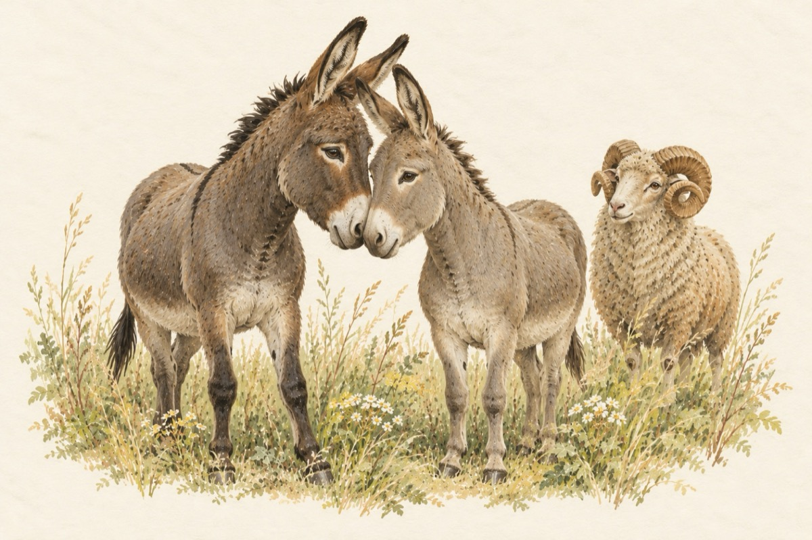

Îndrăgostiții măgăruși
Doi măgari, ce pot să fie?
După nume este grav
Este-un fel de comedie
Ce-i trădează-a lor nărav!
Trag la car atunci când vor
Se opresc când nu e cazul
Nu se știe unde mor
De-acolo vine necazul!…
Aici este vorba de-o idilă
El măgar, ea măgăriță
Nu-i Setilă sau Fomilă
Ci-un iubit cu o iubită.
Berbecul șef de la stână
Cel mai mare din cei doi
Le-a promis că îi cunună
Invitând turma de oi.
Baciul cu al lui caval
Le-a cântat, le-a dat și-un dar
Fără certuri și scandal
La trompetă-un armăsar
În duet cu un măgar
Și încet, încet, încet
Ia sfârșit acest concert.
Vasile Groza